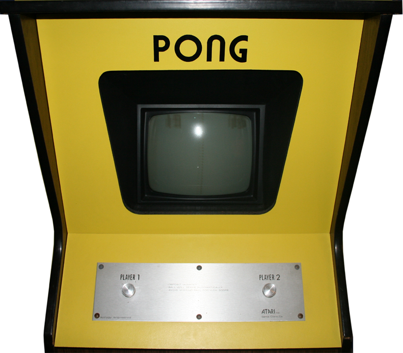

Les origines du jeu vidéo : une histoire d'innovation
Le premier jeu vidéo ne fut pas conçu comme un produit commercial, mais comme une expérience scientifique et technologique. Tout commence en 1958, lorsqu’un physicien nommé William Higinbotham, travaillant au Brookhaven National Laboratory, crée un jeu interactif pour divertir les visiteurs d'une exposition. Ce jeu, intitulé Tennis for Two, utilisait un oscilloscope pour afficher une balle qui rebondissait entre deux joueurs, simulant un match de tennis. Bien qu’il ait été rudimentaire, ce fut une des premières démonstrations du potentiel des interactions numériques.
L’influence des ordinateurs militaires et universitaires
Dans les années 1960, des chercheurs en informatique continuèrent à expérimenter avec les jeux sur ordinateur. L’un des exemples les plus marquants est Spacewar!, développé en 1962 par Steve Russell et ses collègues au Massachusetts Institute of Technology (MIT). Conçu sur un ordinateur PDP-1, Spacewar! permettait à deux joueurs de contrôler des vaisseaux spatiaux qui s'affrontaient dans un environnement simulant la gravité. Bien qu’il soit resté limité aux environnements universitaires, ce jeu marqua une avancée significative en mettant en avant les aspects compétitifs et ludiques des technologies numériques.
La transition vers les premières consoles
Le passage des expériences scientifiques aux produits commerciaux s’est fait au début des années 1970, avec l’invention des premières bornes d’arcade. Pong, développé en 1972 par Atari sous la direction de Nolan Bushnell, est souvent considéré comme le premier jeu vidéo à connaître un succès commercial mondial. Inspiré de Tennis for Two, Pong simplifiait les mécaniques pour les rendre accessibles à un large public. Cette transition marqua le début de l'industrie des jeux vidéo, qui allait rapidement se structurer autour des consoles et des bornes d’arcade.
Un domaine en constante évolution
La naissance des jeux vidéo reflète une époque où la technologie informatique était en pleine effervescence, ouvrant la voie à des idées innovantes. Ce qui n’était qu’une curiosité technologique est devenu un phénomène culturel et économique majeur. Depuis ces premiers jeux, l’industrie n’a cessé de se réinventer, intégrant des innovations techniques pour offrir des expériences toujours y plus immersives. Le premier pas posé par des pionniers comme Higinbotham et Russell a ainsi jeté les bases d’un domaine aujourd’hui incontournable.